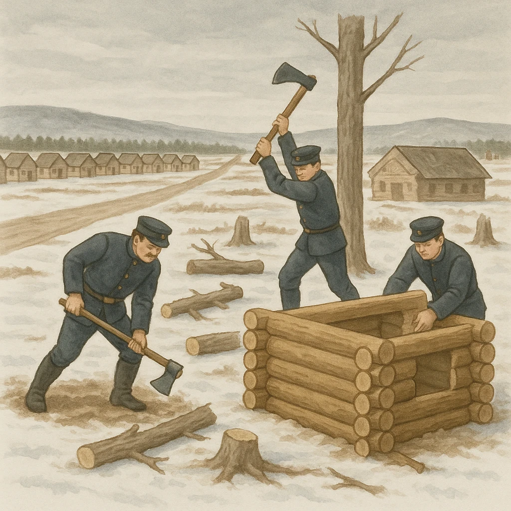

ノート1
北海道の開拓
明治時代、
村ごと
つくって開拓した
役所
明治政府は開拓の役所
開拓使
を置いた
札幌に置かれ、道路・鉄道・農場づくりを進めた（発展）
⑭
開拓のために
屯田兵
村が各地に作られた
北方の警備
と
農村の開拓
を兼ねた人たちの村
都市
そして
札幌
や
旭川
などの都市が作られた
碁盤の目のような区画は開拓のときにつくられたもの
★ テスト頻出
「明治時代に
北方の警備と農村の開拓
のために作られた村」を答える。
先住民→移住者→開拓の兵→札幌・旭川、の順番でおさえる。

第19章 北海道地方
SEED EDUCATION